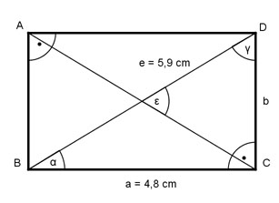

Aufgabe 42 Berechnen Sie den Schnittwinkel ε der beiden Diagonalen.  Im Dreieck BCD: a 4,8 cm cos α = --- = --------- = 0,8136 --> α = 35,6° e 5,9 cm γ = 90° - α = 90° - 35,6° = 54,4° ε = 180° - 2 * γ = 180° - 2 * 54,4° = 71,2°
Aufgabe 42 Berechnen Sie den Schnittwinkel ε der beiden Diagonalen.
